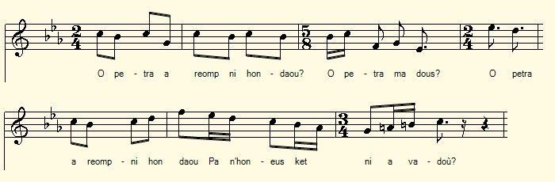

O petra a rimp hon daou?
Comment ferons nous, tous deux
How shall we get along, we both?
Chant collecté par Théodore Hersart de La Villemarqué
dans le 2ème Carnet de Keransquer (p. 156) .

Marivonig
Mélodie de "O petra rimp"
|
A propos de la mélodie: Toute cette "son" est notée pratiquement sans rature ni ajout ultérieur. De ce fait, les mots "ma dous" qui figurent seuls au milieu de la ligne 2 concluent sans doute un "écho" du "O petra" de la ligne 1 qui est elle même répétée en entier à la ligne 3 . La ligne 4 termine la phrase en respectant la rime. Cette structure est celle d'une des mélodies qui accompagnent "Marivonig", un des chants dont La Villemarqué voulait citer certains passages dans sa composition, la "Quenouille d'ivoire". Celle-ci, à son tour évoque à la strophe 50, le 4ème couplet du présent chant. Ladite mélodie a été recueillie en 1856 par le Colonel Alfred Bourgeois. Elle était chantée, accompagnant une version de Marivonik autre que celle publiée par Luzel, par un cocher de diligence, lors du trajet de Guingamp à Saint-Brieuc. Elle parut dans "Kanaouennoù Pobl" en 1959. A propos du texte Il semble que La Villemarqué ait été le seul à collecter cette jolie "son". Dans le carnet 2, ce chant est séparé du précédent par deux autres pièces étudiées à propos des chants du Barzhaz: - An alarc'h - An amzer dremenet. |
About the tune This pretty song is noted practically without erasure or subsequent addition. Therefore we may infer that the words "ma dous" in the middle of line 2 conclude an shortened "echo" of line 1 which is repeated in full in line 3. Line 4 ends the sentence and provides a rhyme to line 1. This structure is that of one of the versions of "Marivonig", one of the songs which La Villemarqué wanted to cite in his composition titled "Ivory distaff" which evokes in stanza 50, the 4th stanza of the presentsong. The said tune was collected in 1856 by Colonel Alfred Bourgeois. It was sung to accompany a version of Marivonik other than that published by Luzel, by a coachman, during the journey from Guingamp to Saint-Brieuc. It was published in "Kanaouennoù Pobl" in 1959. About the lyrics It seems that La Villemarqué was the only one to collect this pretty song. In notebook 2, this song is separated from the previous one by two other pieces examined in connection with the Barzhaz songs: - An alarc'h - An amzer dremenet. |
|
BREZHONEK p. 157 / 86 1. O, petra a rimp-ni hon daou? O petra, ma dous? O petra a rimp ni hon daou, Pa n'hon-eus ket ni a vadaoù? 2. Pa n'hon-eus-ni na ti, na loch O na loch, ma dous! Pa n'hon-eus-ni na ti, na loch Na gwele da gousket en noz? 3. Ni ray hon-daou e'l ar glujar, Ar glujar, ma dous! Ni ray hon-daou e'l ar glujar, Ni chemelo dindan an douar. 4. Madoù a ya, madoù a zeu O a zeu, ma dous! Madoù ' ya war bouez ar ster, Hag ar garantez chom er ger! [1] KLT gant Christian Souchon |
TRADUCTION FRANCAISE p. 157 / 86 1. O, dis-moi, comment ferons-nous, O mon cher amour, Dis-moi donc, comment ferons-nous, Tous les deux, pour vivre sans un sou? 2. N'ayant ni hutte, ni logis, O mon cher amour Hélas, ni hutte, ni logis Et la nuit, pour dormir, point de lit? 3. Comme la perdrix nous ferons, O mon cher amour Comme la perdrix nous ferons Sous la terre un nid nous bâtirons. 4. L'argent s'en vient, l'argent s'en va Ma douce, crois-moi! L'argent peut aller à vau-l'eau, Mais l'amour au logis reste au chaud! [1] Traduction C. Souchon (c) 2020 |
ENGLISH TRANSLATION p. 157 / 86 1. How shall we do, what do you guess O sweetheart, tell me! How shall we do, O do you guess, The two of us, to live penniless? 2. Having neither hut nor cabin, O my sweet darling! Having neither hut nor cabin, Without a bed at night, to sleep in? 3. Now, we shall do like the partridge Sweetheart, believe me! Now, we shall do like the partridge Under the ground a nest we will build. 4. O money comes and money goes Sweetheart, believe me! It goes through all the highs and lows, Whereas love at home will stay enclosed! [1] Traduction C. Souchon (c) 2020 |
NOTES
| [1] La strophe 4 est une variation sur le proverbe "Madoù a zeu, madoù a ya" qui est cité par La Villemarqué dans "La quenouille d'ivoire, str. 50. | [1] Stanza 4 is a variation on the proverb "Madoù a zeu, madoù a ya" which is quoted by La Villemarqué in "La quenouille d'ivoire", stanza 50. |